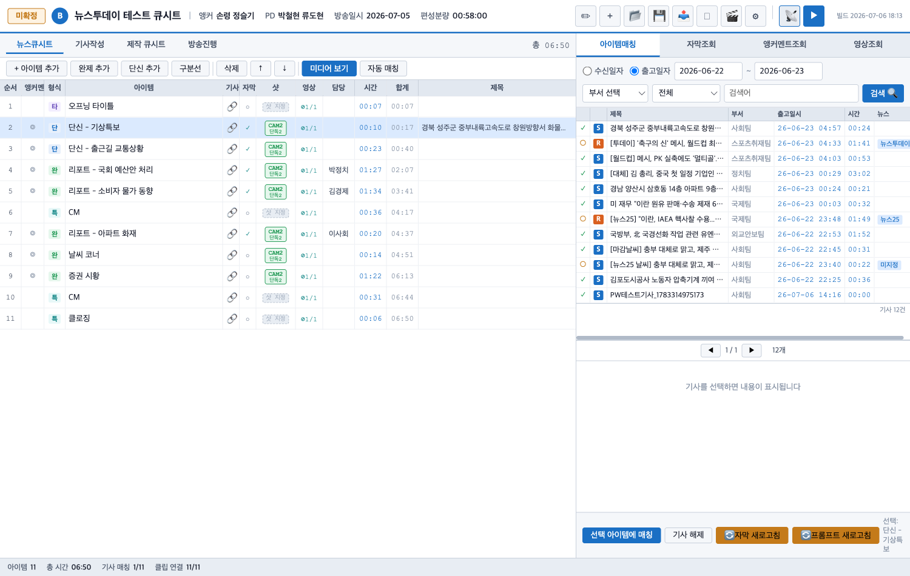
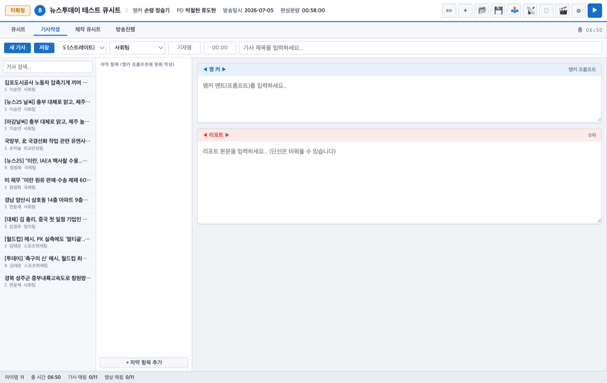
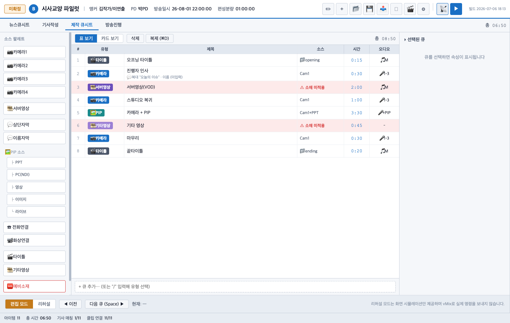
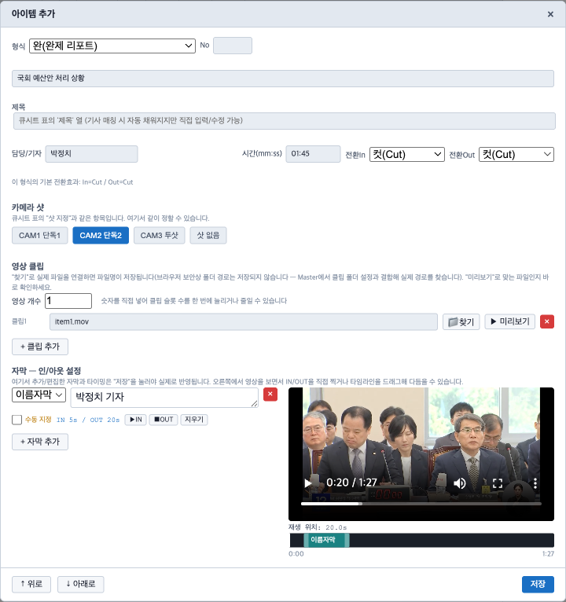

기자가 작성한 기사를 뉴스 큐시트로 엮고, 앵커 멘트·자막·소스를 채워 Master로 넘기기 전까지 준비하는 화면입니다. 아래는 모두 실제 운영 화면을 그대로 캡처한 이미지이며, 이 페이지 자체는 사내 서버에 연결되어 있지 않아 클릭해도 반응하지 않습니다. 이미지를 클릭하면 크게 볼 수 있습니다.

좌측은 지금 만들고 있는 큐시트, 우측은 실제 기사 수신함입니다. 기사를 큐시트 행 위로 드래그하면 자동으로 매칭되고, 제목·자막·시간이 함께 채워집니다.

앵커 프롬프트와 리포트 본문을 나눠 작성하면, 자막 항목이 자동으로 함께 만들어져 Master의 프롬프터·자막 큐로 그대로 이어집니다.

카메라·서버영상·PIP·전화연결 등 소스를 좌측 팔레트에서 끌어와 큐를 구성합니다. 리허설 모드에서는 실제 vMix에 명령을 보내지 않고 화면 시뮬레이션만으로 흐름을 미리 점검할 수 있습니다.

클립을 미리보기하며 자막이 등장·퇴장할 지점을 타임라인에서 직접 드래그해 맞출 수 있습니다. 저장하면 Master가 그대로 같은 타이밍으로 자막을 송출합니다.